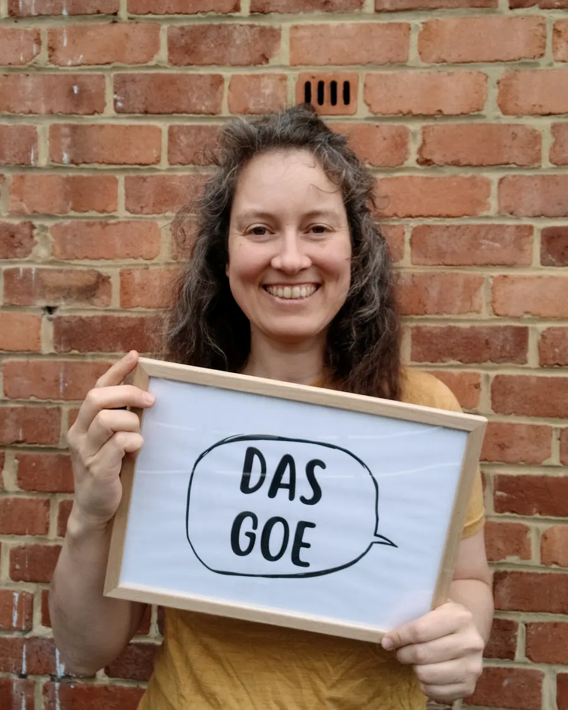
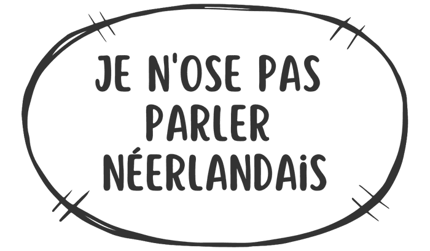
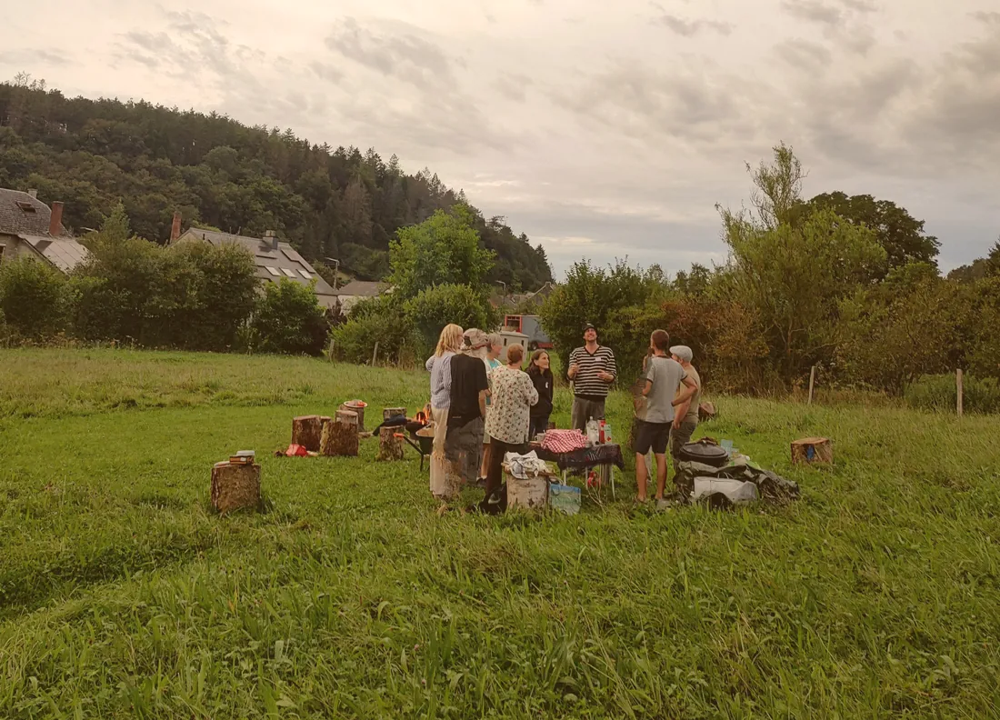
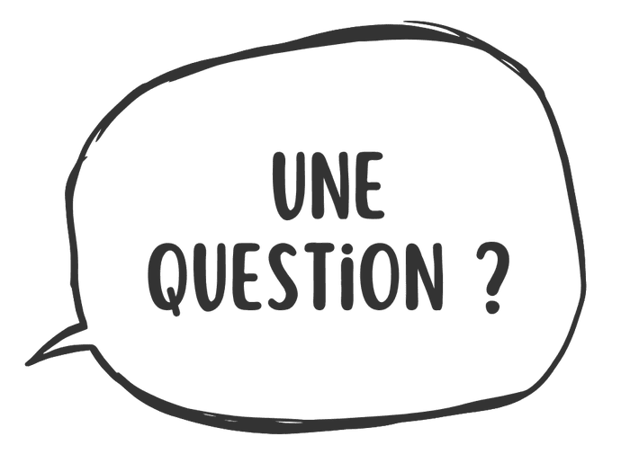
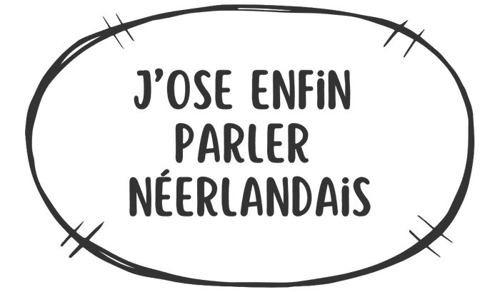

Sam. 12/12 · Apér-au-poêle néerlandais · 25 € Je viens
L'anti-méthode néerlandaise
Oser parler néerlandais.
Y prendre goût. Parfaitement ? Plus tard.
Tu comprends un peu, ou presque rien ? On parle dès le premier jour.
Faisons connaissance, c'est gratuit
15 minutes, en français si tu veux. Rien ne t'engage.


Tu te reconnais ?
- Tu prépares ta phrase dans ta tête. Quand elle est prête, la conversation est déjà passée.
- Quelqu'un te parle néerlandais. Tu comprends… et tu réponds en français.
- Tu l'as appris à l'école, et il ne t'en reste presque rien.
Ton néerlandais est là. Il est juste coincé derrière le trac.
Je suis Erika
Flamande, néerlandais langue maternelle. J'adore les langues, mais j'ai toujours détesté les étudier.
Mon déclic, je l'ai eu avec des amis francophones : trois mots cassés, d'immenses fous rires. Mon français a décollé, sans dictionnaire. J'ai refait le coup au Pérou, en Ukraine, en Chine. Aujourd'hui, il me reste une dizaine de mots de russe et mon espagnol s'endort, mais dès que j'y remets un pied, la langue revient en quelques jours.
J'anime des groupes depuis des années. Je suis aussi coach en gestion du stress, formée à la cohérence cardiaque : le trac qui bloque ta voix, je connais.
DAS GOE, c'est « c'est bon » en flamand.
« Erika m'a aidée à étudier pour mes examens. Elle avait une façon sympa d'apprendre à étudier […]. Grâce à elle, la matière où j'étais en échec est devenue une note impressionnante sur mon bulletin. »
Amber
Mal parler est le seul chemin vers bien parler.
Avec des fautes, sans note, sans liste de vocabulaire. Zéro théorie, zéro jugement. Le néerlandais ne mord pas. Il grogne un peu, c'est tout.
Où on se parle
Pas à l'aise ? Premier cours sans engagement, balade remboursée sur place, guide remboursé dans les 7 jours. Formules mensuelles sur demande.
Autour du feu
« Très chouette soirée organisée par Erika. Un moment de convivialité pour discuter en néerlandais autour du feu en toute bienveillance et avec zéro jugement. »
Michaël
« Un accueil chaleureux, une activité où le respect de chacun est primordial, chacun vient comme il est […]. Une très belle expérience. »
Inès


Questions
Comment ça se passe ?
On fait connaissance 15 minutes, gratuitement. Puis on parle dès la première minute, avec des phrases toutes faites. Personne ne te coupe pour te corriger : un ou deux trucs à retenir à la fin, c'est tout.
Je ne parle presque pas néerlandais. C'est trop tôt ?
« Trop tôt » n'existe pas ici. Si tu comprends « Hoe gaat het? », tu as largement le niveau. Même avec des bases scolaires lointaines, tu es le bienvenu.
Et si je ne trouve plus mes mots ?
Rien de grave. On parle avec les mains, les pieds, et s'il le faut, un mot en français. Je suis là pour te souffler le mot qui manque, sans pression.
Je dois préparer quelque chose ?
Non. Zéro devoir, zéro liste à réviser. Tu arrives comme tu es.
J'ai peur de parler devant un écran.
Commence par l'appel découverte : 15 minutes, en français, pour voir si ça te va. Si l'écran te bloque, je m'adapte. Ou viens en balade : là, pas d'écran.
Et s'il pleut ?
« Er bestaat geen slecht weer, alleen slechte kleren » : il n'y a pas de mauvais temps, juste de mauvais vêtements. Sauf tempête, la balade est maintenue.
Comment je réserve et je paie ?
Tu m'écris sur WhatsApp et on fixe le jour ensemble. Tu paies par Bancontact, prix finaux. Le guide, je te l'envoie par e-mail dès que ton paiement est arrivé.

Et toi ?
Écris-moi. En français, en néerlandais ou en mal parlé : c'est un bon début.